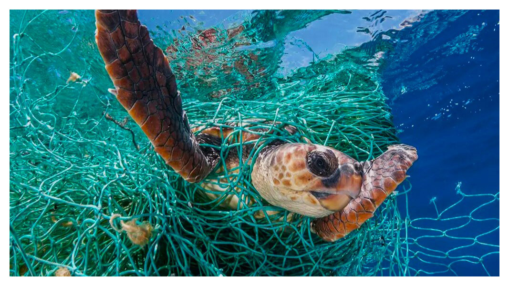
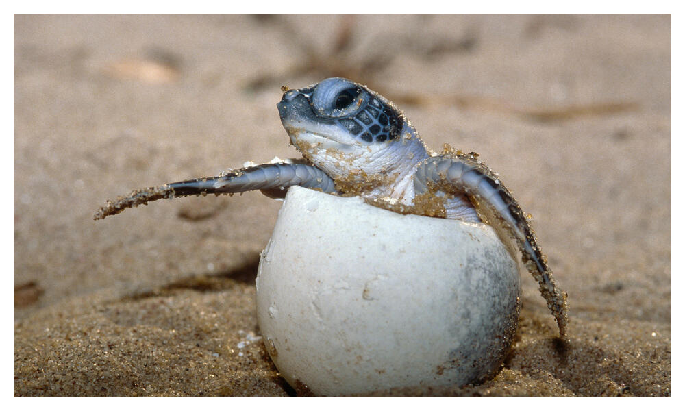
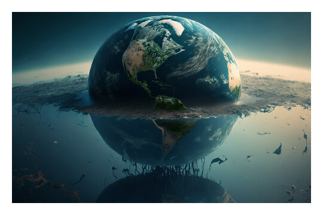

THREATS TO TURTLES
Entanglement in fishing gear
Turtles get caught on long-lines, in shrimp nets, and get injured with bomb fishing. To prevent this from happening all gear should be clearly marked consistent with applicable regulation. All gear should be maintained so markings are clearly legible to facilitate correct identification of the origins of gear involved in entanglements
Consumption and illegal trade of eggs and meat
Turtle eggs are considered to be an aphrodisiac in many places (with no basis in science) and their meat (primarily green turtles) is still consumed, even though both are illegal in most countries. Everyone can play a role in combatting crime committed in relation to marine turtles. This can be done, for instance, by engaging and supporting the work of some of the organizations, such as TRAFFIC and WWF, or simply by reporting crimes when they are witnessed
Global warming
The effects of global warming are having enormous impacts on sea turtles and other wildlife. The rate of global warming far exceeds the abilities of animals to adapt naturally to such dramatic environmental changes. Sea level rise from the melting of polar ice is already contributing to the loss of beach and sea turtle nesting habitat. Weather extremes, also linked to climate change, mean more frequent and severe storms which alter nesting beaches, cause beach erosion, and inundate, or flood sea turtle nests. So we prefer planting trees willbe more accurate in order to reduce global warming by the time
~ Visit Our Other Hatcheries ~
.png)
.png)